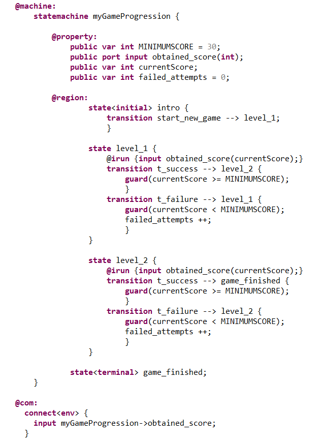
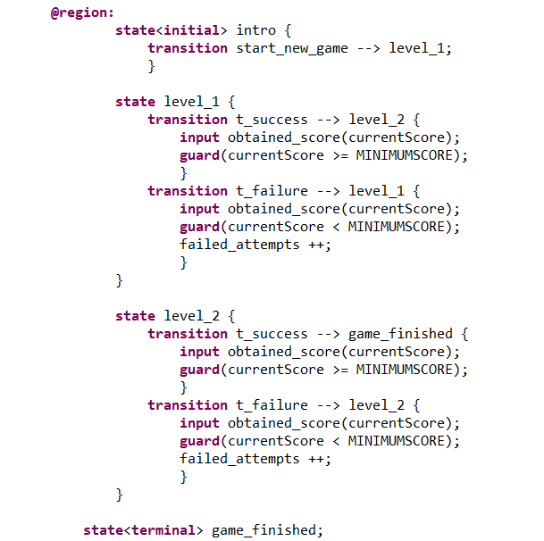

We must consider a basic state :
The following example is that of a video game (the system). The statemachine represents the progression in the current game. Each one of its state represent a level in the game.
When the player is playing a level, he can either win or lose :
Here is the code within the system :
Which gives the following graph :

The "@irun{...}" of the state is evaluated before evaluating the transitions. Therefore this is equivalent to having :
As a consequence, at each given step of evaluation, the player, starting from a given level, gets a new "currentScore" through the port "obtained_score" and can either stay in the same level or go to the next according to the score value :

Here, the "@irun{...}" of the state is used to factorize the same code in each outgoing transition of the origin state.